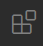
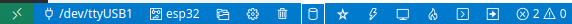

LAB1. Introducción al entorno de desarrollo ESP-IDF
Objetivos
- Conocer el entorno de desarrollo para el ESP32.
- Ser capaz de compilar, flashear y monitorizar proyectos sencillos basados en ESP-IDF.
- Entender el funcionamiento básico de una aplicación ESP-IDF que haga uso de las capacidades WiFi del ESP32.
- Personalizar variables de configuración de proyectos ESP-IDF.
- Responder a eventos básicos de red en ESP-IDF.
Entregable
Se entregará un .zip (o similar) con:
- Un informe en PDF describiendo el trabajo realizado y los resultados observados/obtenidos.
- El código desarrollado para cada uno de los ejercicios de la práctica.
Introducción
ESP-IDF (Espressif IoT Development Framework) es el entorno de desarrollo oficial de Espressif para los SoCs ESP32. Este entorno de desarrollo y conjunto de herramientas permite desarrollar firmwares eficientes para dichas placas utilizando las interfaces de comunicación WiFi y Bluetooth, así como gestionar múltiples características de los SoCs que iremos desgranando en futuras prácticas.
ESP-IDF utiliza como base FreeRTOS pero añade multitud de componentes que, por ejemplo, implementan los protocolos de comunicación de bajo y alto nivel usados en proyectos IoT.
Esta práctica es una introducción básica a la puesta en marcha del entorno de desarrollo ESP-IDF. Además, veremos de forma superficial la estructura básica de un programa sencillo desarrollado usando ESP-IDF, así como ejemplos básicos para la puesta en marcha de la interfaz WiFi sobre una placa ESP32.
Visual Studio Code y su extensión de Espressif ESP-IDF
Utilizaremos Visual Studio Code como entorno de desarrollo integrado. Este entorno tiene una organización sencilla, como un editor de textos simple, pero es ampliamente configurable con un sistema de plugins fáciles de instalar y configurar.
Lo primero que tendremos que hacer es instalar en nuestro equipo Visual Studio Code (en los puestos de laboratorio ya está instalado). Una vez instalado, pulsaremos el botón de extensiones en el panel izquierdo:

o pulsaremos Ctrl+Shift+X. En el cuadro de texto que se nos muestra, escribiremos el nombre de la extensión que queremos instalar, en este caso ESP-IDF. Seleccionamos la extensión y la instalamos (en los puestos de laboratorio ya está instalada). Asimismo, deberemos seguir las instrucciones para instalar las herramientas adicionales necesarias en nuestro equipo. Para ello, desde la página de bienvenida de la extensión que acabamos de instalar, buscamos el apartado Quick actions > Configure extension y seguimos las instrucciones para instalar y configurar ESP-IDF Installation Manager (EIM) y las herramientas necesarias.
En Linux, es necesario, en todo caso, que el usuario que estés utilizando
pertenezca al grupo dialout. Para ello puedes editar el fichero /etc/group
añadiendo a tu usuario a la línea que indica el grupo correspondiente, e
iniciando de nuevo tu sesión, o puedes utilizar el siguiente comando:
sudo adduser ubuntu dialout
Después, tendrás que salir de la sesión y volver a entrar para que el nuevo grupo sea reconocido.
En los sistemas Windows es necesario seguir estas instrucciones si queremos poder depurar en circuito usando el controlador JTAG integrado en las placas ESP DevKit RUST con ESP32-C3.
Si queremos usar las herramientas de Espressif directamente desde el terminal de comandos debemos recordar que tenemos que importar las variables de entorno antes de usar las herramientas.
Para ello se proporciona un script (export.sh) disponible en la ruta en la que hayas instalado las herramientas.
Entonces, desde dicho directorio ejecutamos:
source export.sh
Puedes añadir esta línea en cualquier fichero de inicio de sesión para no tener que ejecutar el comando cada vez. Por ejemplo, puedes editar el fichero $HOME/.bashrc y añadir al final de dicho fichero la línea:
source $HOME/esp/esp-idf/export.sh
Si has seguido todos estos pasos correctamente, deberías tener acceso a un programa llamado idf.py.
Compruébalo, por ejemplo, consultando la versión de ESP-IDF:
$ idf.py --version
ESP-IDF v6.1
Proyecto de ejemplo
En esta primera parte, nos basaremos en un ejemplo sencillo de código desarrollado en base a ESP-IDF. No es el objetivo de esta práctica analizar en detalle la estructura de dicho código, sino utilizarlo para ilustrar el flujo de trabajo típico en un proyecto ESP-IDF.
Para empezar crearemos en nuestro sistema una carpeta para almacenar nuestros proyectos.
Después crearemos en esta carpeta un proyecto a partir de uno de los ejemplos que vienen con el SDK de Espressif.
Desde Visual Studio Code podemos pulsar la combinación de teclas Shift+Ctrl+P, lo que nos abre la paleta de comandos en la parte superior central de la ventana.
En ella escribiremos >ESP-IDF, para filtrar las opciones de ESP-IDF, y buscaremos ESP-IDF: New Project.
En este momento se nos abrirá una pestaña de creación de proyecto con los ejemplos que vienen con el SDK.
Seleccionamos el ejemplo hello_world dentro de get-started y, cuando nos pregunte, la carpeta donde queremos guardar el proyecto.
Esto copiará el ejemplo que viene con las herramientas a nuestra carpeta de trabajo.
Compilación
Para compilar el proyecto desde Visual Studio Code basta con pulsar el botón de compilación en la barra inferior de comandos:

Otras opciones son seleccionar la opción ESP-IDF: Build Your Project en la paleta de comandos o utilizar el comando idf.py desde la terminal de ESP-IDF:
idf.py build
Si todo ha ido bien, en el directorio build se habrán generado los objetos y binarios listos para ser flasheados en el ESP32.
Volcado a memoria flash (flasheado)
Para programar la placa del ESP32, podemos pulsar el botón de flash de la barra de comandos y seleccionar la opción ESP-IDF: Flash (UART) Your Project.
Asimismo, podemos usar idf.py desde un terminal:
idf.py -p PUERTO flash
En este punto, el ESP32 debe estar conectado utilizando el cable microUSB. Si estás trabajando en una máquina virtual, debe haberse hecho visible a la misma (por ejemplo, en VirtualBox, a través del menú Dispositivos->USB->Silicon Labs USB to UART Bridge Controller).
Monitorización
Podemos monitorizar la salida estándar del programa que se está ejecutando en el ESP32, utilizando el puerto serie virtual creado al conectar el dispositivo al equipo. Desde Visual Studio Code podemos pulsar el botón de monitorización en la barra de comandos de ESP-IDF para comenzar a ver la salida estándar en el terminal integrado. Alternativamente, podemos ejecutar el comando ESP-IDF: Monitor Device en la paleta de comandos o ejecutar:
idf.py -p PUERTO monitor
Análisis de un proyecto sencillo en ESP-IDF
Observa la estructura general del directorio hello_world que compilaste
anteriormente. Específicamente, nos interesará inspeccionar la estructura
básica de un programa principal para ESP-IDF, en este caso hello_world_main.c:
#include <stdio.h>
#include "sdkconfig.h"
#include "freertos/FreeRTOS.h"
#include "freertos/task.h"
#include "esp_system.h"
#include "esp_spi_flash.h"
void app_main(void)
{
printf("Hello world!\n");
/* Print chip information */
esp_chip_info_t chip_info;
esp_chip_info(&chip_info);
printf("This is %s chip with %d CPU cores, WiFi%s%s, ",
CONFIG_IDF_TARGET,
chip_info.cores,
(chip_info.features & CHIP_FEATURE_BT) ? "/BT" : "",
(chip_info.features & CHIP_FEATURE_BLE) ? "/BLE" : "");
printf("silicon revision %d, ", chip_info.revision);
printf("%dMB %s flash\n", spi_flash_get_chip_size() / (1024 * 1024),
(chip_info.features & CHIP_FEATURE_EMB_FLASH) ? "embedded" : "external");
printf("Minimum free heap size: %d bytes\n", esp_get_minimum_free_heap_size());
for (int i = 10; i >= 0; i--) {
printf("Restarting in %d seconds...\n", i);
vTaskDelay(1000 / portTICK_PERIOD_MS);
}
printf("Restarting now.\n");
fflush(stdout);
esp_restart();
}
A alto nivel, la función app_main es el punto de entrada a todo programa
desarrollado usando ESP-IDF. De modo más específico, tras la carga del
sistema, la tarea principal (main task) ejecuta el código proporcionado por
el usuario e implementado en la función app_main. Tanto el tamaño de pila
asignado como la prioridad de esta tarea puede ser configuradas por el
desarrollador a través del sistema de configuración de ESP-IDF (lo veremos más
adelante). Normalmente, esta función se utiliza para llevar a cabo tareas
iniciales de configuración o para crear y lanzar a ejecución otras tareas.
Se puede implementar cualquier funcionalidad dentro de la función app_main
o invocar a otras funciones que la implementen.
En este ejemplo, se muestra en primer lugar información genérica sobre el SoC que está ejecutando el firmware:
/* Print chip information */
esp_chip_info_t chip_info;
esp_chip_info(&chip_info);
printf("This is %s chip with %d CPU cores, WiFi%s%s, ",
CONFIG_IDF_TARGET,
chip_info.cores,
(chip_info.features & CHIP_FEATURE_BT) ? "/BT" : "",
(chip_info.features & CHIP_FEATURE_BLE) ? "/BLE" : "");
printf("silicon revision %d, ", chip_info.revision);
printf("%dMB %s flash\n", spi_flash_get_chip_size() / (1024 * 1024),
(chip_info.features & CHIP_FEATURE_EMB_FLASH) ? "embedded" : "external");
printf("Minimum free heap size: %d bytes\n", esp_get_minimum_free_heap_size());
A continuación, dentro de un bucle sencillo, el sistema muestra un mensaje y
después suspende su ejecución por un determinado período de tiempo
utilizando la función de FreeRTOS vTaskDelay.
Esta función recibe como parámetro el número de ticks de reloj durante los cuales se desea
suspender la ejecución de la tarea, que pueden calcularse dividiendo el tiempo que
deseamos suspender la tarea entre la duración de un tick.
FreeRTOS proporciona la constante portTICK_PERIOD_MS, que nos da la duración en milisegundos de un tick:
for (int i = 10; i >= 0; i--) {
printf("Restarting in %d seconds...\n", i);
vTaskDelay(1000 / portTICK_PERIOD_MS);
}
Finalmente, la tarea reinicia el sistema tras la finalización de la tarea principal:
printf("Restarting now.\n");
fflush(stdout);
esp_restart();
Ejercicio 1
Modifica el período de suspensión de la tarea para que sea mayor o menor y comprueba que este cambio modifica efectivamente el comportamiento del firmware cargado.
Ejercicio 2
Modifica el programa para que únicamente compruebe si el SoC dispone de capacidades WiFi y BLE y muestre la información correspondiente (Sí/No) por la salida estándar. Prueba a ejecutar el programa en los dos tipos de ESP32 de los que disponemos: ESP32 y ESP32-C3.
Creación de tareas
El código anterior puede replantearse para que no sea la tarea principal la que ejecute la lógica del programa. Para ello, es necesario introducir brevemente la API básica para la gestión de tareas (en nuestro caso solo necesitamos crear una tarea). Verás muchos más detalles sobre esta API en la asignatura ANIOT, por lo que aquí no veremos más detalles de los estrictamente necesarios.
La función xTaskCreate (incluida en task.h) permite la creación de nuevas
tareas:
BaseType_t xTaskCreate(TaskFunction_t pvTaskCode,
const char * const pcName,
configSTACK_DEPTH_TYPE usStackDepth,
void *pvParameters,
UBaseType_t uxPriority,
TaskHandle_t *pxCreatedTask);
Concretamente, crea una nueva tarea y la añade a la lista de tareas listas para ejecución, recibiendo como parámetros:
pvTaskCode: La dirección de la función de entrada para la tarea. Las tareas suelen implementarse como un bucle infinito. No deben retornar de la función de entrada ni finalizar abruptamente. Para finalizar correctamente una tarea, esta debe ejecutar la funciónvTaskDeletecon el parámetro NULL. Alternativamente, puede usarse esta función para eliminar otra tarea, pasando como argumento avTaskDeletela dirección del manejador inicializado en el proceso de creación (último parámetro en la creación). Por ejemplo, la siguiente función presenta un esquema de código correcto para la función de entrada de una tarea en FreeRTOS:
void vATaskFunction(void *pvParameters)
{
for(;;)
{
-- Task application code here --
}
/* Tasks must not attempt to return from their implementing
function or otherwise exit. In newer FreeRTOS ports
attempting to do so will result in an configASSERT() being
called if it is defined. If it is necessary for a task to
exit then have the task call vTaskDelete(NULL) to ensure
its exit is clean. */
vTaskDelete(NULL);
}
pcName: nombre descriptivo de la tarea a ejecutar, típicamente usado en tiempo de depuración.usStackDepth: número de palabras que se reservarán para la pila de la tarea.pvParameters: parámetros a proporcionar a la función de entrada para la tarea.uxPriority: prioridad asignada a la tarea.pxCreatedTask: manejador opcional para la tarea.
Así, la funcionalidad del programa hello_world que hemos analizado anteriormente podría reestructurarse en base a una única tarea, cuya función de entrada podría ser:
void hello_task(void *pvParameter)
{
printf("Hello world!\n");
for (int i = 10; i >= 0; i--) {
printf("Restarting in %d seconds...\n", i);
vTaskDelay(1000 / portTICK_PERIOD_MS);
}
printf("Restarting now.\n");
fflush(stdout);
esp_restart();
}
Cabe destacar que, al reiniciar el sistema, no es necesario terminar correctamente la tarea mediante la ejecución de vTaskDelete.
La función app_main se limitaría entonces a crear la tarea:
void app_main()
{
xTaskCreate(hello_task, "hello_task", 2048, NULL, 5, NULL);
}
Ejercicio 3
Implementa una modificación del programa hello_world que implemente y planifique dos tareas independientes con distinta funcionalidad (en este caso, es suficiente con mostrar por pantalla algún mensaje) y distintos tiempos de suspensión. Comprueba que, efectivamente, ambas tareas se ejecutan concurrentemente.
Personalización del proyecto
ESP-IDF utiliza la biblioteca kconfiglib para proporcionar un sistema de
configuración de proyectos en tiempo de compilación sencillo y extensible. Para
ilustrar su funcionamiento, utilizaremos el ejemplo blink que puedes encontrar
en el repositorio de ejemplos de ESP-IDF. Crea un nuevo proyecto a partir de dicho ejemplo.
Para configurar un proyecto ESP-IDF, se puede pulsar el botón SDK Configuration Editor (Menuconfig) de la barra de comandos de ESP-IDF, ejecutar dicho comando desde la paleta de comandos de Visual Studio Code o bien ejecutar el comando menuconfig desde el terminal:
idf.py menuconfig
Al ejecutar el comando se nos mostrará un menú por el que podremos navegar usando el ratón (o las teclas del cursor si lo ejecutamos desde terminal). El menú nos presenta unas opciones de carácter general, que permitirán configurar características específicas del proyecto a compilar.
Observa que una de las secciones de opciones del menú de navegación, llamada Example configuration, incluye la opción Blink GPIO number.
Esta entrada define el número de pin GPIO al que se conecta el LED que el programa hará parpadear.
Esta opción de configuración definirá en tiempo de compilación el valor de una constante llamada CONFIG_BLINK_GPIO, que podemos utilizar en el código para obtener el valor que le haya asignado el usuario durante la configuración del proyecto.
Ejercicio 4
Prueba a ejecutar el proyecto blink en un ESP32-C3 configurando la opción Blink GPIO number para usar el pin GPIO 2. ¿Qué ocurre?
Esta opción de configuración no forma parte de las opciones por defecto de
ESP-IDF, sino que ha sido añadida por los desarrolladores del proyecto blink.
Observa y estudia el formato y contenido del fichero main/Kconfig.projbuild
que se proporciona como parte del fichero. En él, se definen las características
(nombre, rango, valor por defecto y descripción) de la opción de configuración
a definir.
Ejercicio 5
Modifica el proyecto hello_world para que defina dos opciones de configuración que permitan definir el tiempo de espera de cada una de las dos tareas que hayas definido en el ejercicio 3. Haz uso de ellas en tu código y comprueba que su modificación a través del sistema de menús permite una personalización del comportamiento de tu código.
Escaneado de redes WiFi
A modo de ejemplo, y en preparación para el código que trabajaremos en futuras prácticas, vamos a analizar un ejemplo concreto de firmware cuya tarea es el escaneado de redes inalámbricas al alcance del ESP32, y su reporte a través de su salida estándar (que podremos ver gracias a la facilidad de monitorización del programa). Para cada red escaneada, se reportarán sus características principales.
Ejercicio 6
Compila, flashea y monitoriza el ejemplo scan situado en el directorio wifi. Crea un nuevo proyecto a partir de este ejemplo y amplia el número máximo de redes a escanear a 20 a través del menú de configuración. Crea un punto de acceso WiFi con tu teléfono móvil y observa que es escaneado por el ESP32.
Observa su funcionamiento. El firmware simplemente escanea un subconjunto de las redes disponibles, reportando algunas de sus características (por ejemplo, SSID, modo de autenticación o canal primario).
Ejercicio 7
Analiza por encima el código de la función wifi_scan (tarea principal).
Céntrate especialmente en las líneas que permiten activar y configurar el
escaneado de redes. Intenta comprender el funcionamiento general del programa,
prestando especial atención a las funciones con prefijo esp_wifi_*.
Para más información, por ahora puedes consultar la documentación oficial de ESP-IDF.
Gestión de eventos de red
Otro ejemplo que estudiaremos es un programa para la conexión del ESP32 a un punto de acceso existente. Este ejemplo nos permitirá observar, a grandes rasgos, el sistema de gestión de eventos en FreeRTOS/ESP-IDF, que permite gestionar la respuestas a eventos de red, como por ejemplo la obtención de dirección IP o la conexión exitosa a un punto de acceso.
Ejercicio 8
Crea un proyecto a partir del ejemplo station situado en el directorio wifi/getting_started. Compílalo, flaséalo y monitoriza su salida estándar. Acuérdate de modificar el SSID de la red a la que se conectará, así como la contraseña elegida a través del sistema de menús de configuración.
Observa su funcionamiento. El firmware simplemente inicializa el dispositivo en modo station (en contraposición al modo Access Point, que veremos en el próximo laboratorio), realizando una conexión al punto de acceso preconfigurado a través del menú de configuración.
Analiza el código de la función wifi_init_sta. Esta función, que implementa
la tarea principal, se divide básicamente en dos partes:
- Gestión de eventos: observa el mecanismo mediante el cual se registra
y se asocia la recepción de un evento a la ejecución de un manejador o función
determinada (pista: función
esp_event_handler_instance_register). - Configuración de la conexión a un punto de acceso: la configuración de la
conexión se realiza a través de los campos correspondientes de una estructura
de tipo
wifi_config_t. Observa los campos básicos que necesita, cómo fuerza el uso de WPA2 y cómo recoge los datos de conexión (SSID y contraseña) a través del sistema de configuración. Observa también cómo, una vez realizadas dichas personalizaciones, inicializa el sistema de comunicación inalámbrica a través deesp_wifi_start().
Ejercicio 9
Modifica el firmware para que el handler (función event_handler) encargado del tratamiento de la obtención
de una dirección IP sea independiente del tratamiento del resto de eventos del sistema WiFi.
Comprueba que, efectivamente sigue observándose la salida asociada a dicho evento, aun cuando ambas
funciones sean independientes.